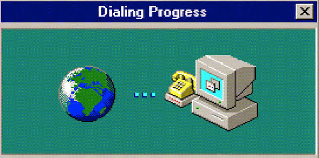

Dial Up web design is how websites were orignially designed to function. Made up of only HTML tables, limited visuals were used to avoid long loading times. In present day, the Dial up aesthetic is used for website characteristics such as pixel art, retro colors, and grid layouts.

Where dial up works would be websites where minimal information and graphics are needed, such as a goverment website, medical website, or a simple web browser.
Where dial up does not work would be websites that require graphics, animation, or images, such as a brand website or social media site